Introducción
Las fusiones nucleares son las uniones de núcleos atómicos para formar elementos más pesados. Las que estudiaremos son exotérmicas, es decir, liberan energía al producirse, y son la principal fuente energética en las estrellas. Esta energía es emitida porque el núcleo resultante es más estable que aquellos que se fusionaron, y está relacionada con la diferencia de masa entre el núcleo final y la suma de los núcleos iniciales, por medio de la famosa ecuación de la energía de Einstein.
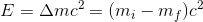
La energía también se puede obtener por medio de fisiones nucleares, pero estas no se dan o no tienen importancia en las estrellas, y no serán abordadas en este trabajo.
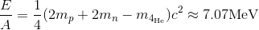 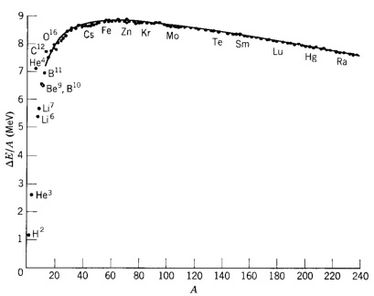
La energía media de enlace por nucleón de un átomo es la energía en la cual el término de masa es la diferencia entre la suma de las masas de los nucleones que lo componen y el núcleo del mismo, y dividida por el número másico A. Por ejemplo, en el 4He, el cual tiene dos protones y dos neutrones:
En la secuencia principal, las estrellas fusionan hidrógeno para producir helio, siendo ésta la reacción más eficiente para crear energía. Luego las estrellas pueden fusionar otros elementos sobre las cenizas de estas reacciones anteriores, hasta llegar a producir 56Fe el cual tiene una energía de enlace máxima (8.7MeV). A partir de este punto, cualquier fusión resultaría endotérmica. En el siguiente gráfico se pueden ver las distintas energías de enlace en función del número másico A.
Contexto histórico
El mecanismo de generación de energía estelar fue un enigma durante muchísimo tiempo. Hasta el descubrimiento de la energía nuclear no fue posible armar un modelo que describiera de manera confiable el origen de la luminosidad de las estrellas. Lord Kelvin (1824-1907) supuso que el origen de la misma era consecuencia del teorema del virial, el cual tenía como resultado la contracción gravitatoria de un astro con un consecuente calentamiento. Tomando la ecuación de energía potencial de un cuerpo esférico, y suponiendo que el Sol ha estado emitiendo durante toda su existencia con la misma luminosidad, se puede realizar el cálculo y obtener la siguiente edad solar:
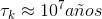
Este resultado en su momento fue esgrimido como un triunfo por los creacionistas, ya que era un tiempo muy escaso comparado con el que contemplaban las teorías de Darwin, y más que suficiente para los aproximadamente 8000 años que databan la Creación según la Biblia.
El descubrimiento de la energía nuclear abrió nuevos panoramas, ya que permite establecer que el Sol mantendrá su luminosidad en un nivel constante en un tiempo del orden de 1010 años. Además, conocer las propiedades de los núcleos atómicos ayudó a ubicar cronológicamente los distintos fósiles, eras geológicas, e inclusive los distintos materiales del sistema solar. Los materiales más antiguos encontrados tienen alrededor de 4600 millones de años, lo que nos permite decir que el Sol está aproximadamente a la mitad de su vida en la secuencia principal.
Un poco de física - Efecto Túnel
Antes de abordar a las reacciones nucleares debemos preguntarnos, ya que es lo que concierne a esta materia, si las mismas pueden darse en los interiores estelares. Para que una fusión nuclear pueda llevarse a cabo, los núcleos atómicos deben colisionar para formar un nuevo núcleo. Sin embargo, sabemos que los núcleos atómicos están cargados positivamente, por lo que se repelerán eléctricamente y para llevar a cabo esta colisión habrá que superar una barrera de potencial, llamada potencial coulombiano, para que empiecen a actuar las fuerzas nucleares, las cuales actúan a muy escasa distancia. En la siguiente gráfica podemos ver la curva de potencial separada en dos partes, la región "exterior" en la que vemos que la curva está dada por la energía potencial de Coulomb entre dos núcleos cargados positivamente, y la región "interior" donde vemos el pozo de potencial dado por la fuerza nuclear fuerte.
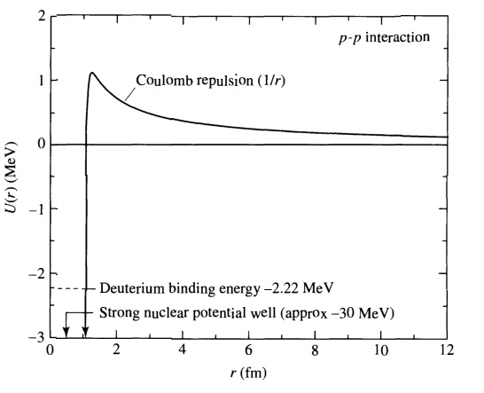
Estimaremos ahora la temperatura necesaria para que los nucleones tengan la energía necesaria para superar la barrera de potencial coulombiano. Asumiendo primero que la energía de los nucleones es energía termal del gas, y que los mismos no se mueven a velocidades relativistas, podemos calcular la misma.Tomando que el gas se mueve aleatoriamente nos referiremos entonces a la velocidad promedio de las partículas y a su masa reducida. Asumimos como conocida esta igualdad: 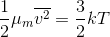
Abordando el problema desde un punto de vista clásico, igualamos la energía cinética a la energía potencial en el máximo de la barrera de Coulomb.
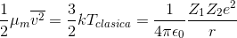
Asumiendo que el radio típico es del orden del femtómetro (1fm=10-15m), y tomando una fusión entre dos protones (Z1=Z2=1) la temperatura "clásica" necesaria para superar la barrera es:
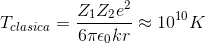
Las temperaturas en el centro del Sol están estimadas en el orden de 107 K, por lo que inclusive considerando que la distribución de Maxwell-Boltzmann nos dice que existen partículas con velocidades superiores a la promedio la física clásica no puede abordar este tema. 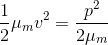
Debemos abordar este problema desde el punto de vista cuántico, y usar el Efecto Túnel, el cual nos dice que un nucleón próximo a otro pero con una energía cinética por debajo del potencial coulombiano tiene una probabilidad distinta de cero de atraversarlo.
Para estimar de una manera bastante cruda la "temperatura cuántica" asumimos que la distancia entre protones es de aproximadamente una longitud de onda de De Broglie (h/p).
Reescribimos la energía cinética en términos del momento:
Usando ahora la distancia igual a h/p, tenemos: 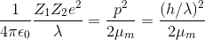
Resolviendo para la longitud de onda, y reemplazando esta misma en la ecuación que teníamos de Tclasica obtenemos una Tcuantica
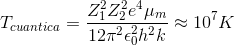
Vemos que esta temperatura es del orden del magnitud de la que encontramos en el centro del Sol, por lo que tomando los efectos de la mecánica cuántica, podemos ver que se pueden dar reacciones nucleares en los interiores estelares.
Tasa de reacciones nucleares - Pico de Gamow
No todas las partículas de un gas a temperatura T tendrán la energía cinética necesaria para atravesar la barrera de Coulomb mediante efecto túnel, por lo que debemos describir las tasas de reacción. Esta tasa debemos describirla a partir de la densidad de partículas en un determinado rango de energías combinada con la probabilidad que tengan esas partículas de atravesar la barrera mediante efecto túnel. Luego esta se integra sobre toda las energías posibles.
Consideremos la densidad de núcleos en un intervalo de energía. Primero vemos que la distribución de Maxwell-Boltzmann de partículas con velocidad entre v y v+dv se puede reescribir en términos de las energías cinéticas entre E y E+dE de la siguiente manera: 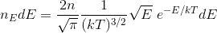
Esta ecuación nos da el número de partículas por unidad de volumen que tienen energía en el rango E-E+dE. Debemos ver también la probabilidad de que las partículas interactúen, no contemplada en esta ecuación. Para esto vemos a la sección transversal sigma(E), la cual la definimos como el número de reacciones por núcleo por unidad de tiempo, dividida por el flujo de partículas incidentes.
Denotemos por el subíndice i a las partículas incidentes y por x a las objetivo. Para este intervalo de energía, si el número de partículas incidentes es niE entonces el número de reacciones dNE es el número de partículas i que pueden impactar a x en el intervalo temporal dt.
Veamos el siguiente cilindro, el número de partículas incidentes es entonces el contenido en él, y dNE puede escribirse de la siguiente forma.
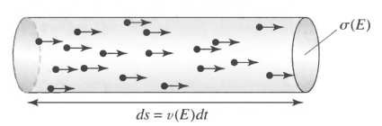 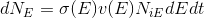
Por su parte, el número incidente es una fracción del número total:
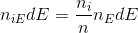 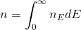 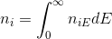
Reemplazando en la expresión de dNE y dividiendo por dt:
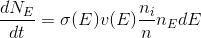
Finalmente, multiplicamos por el número nx de partículas objetivo e integramos para obtener el número total de reacciones por unidad de volumen por unidad de tiempo.
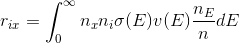
Para usar esta expresión, deberíamos conocer la forma funcional de sigma, la cual es muy complicada al variar sigma mucho con la energía. Sin embargo, podemos establecer una serie de comparaciones.
Primero podemos ver que la definimos como un área transversal, y la podemos pensar como realmente un área física (por ejemplo, al mostrar el cilindro). Además, podemos aproximar el radio de un núcleo como una longitud de onda de De Broglie. Entonces podemos ver las siguientes proporcionalidades:
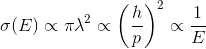
También debemos mencionar cómo se relaciona la probabilidad de que una partícula traspase la barrera coulombiana mediante efecto túnel con la altura de la misma. Si la altura Uc de la barrera es 0, entonces la partícula tendrá un 100% de posibilidades de atravesarla, luego descendiendo asintóticamente hacia 0 a medida que la altura crece. Como sigma se relaciona con la probabilidad de que se de el efecto túnel, también podemos establecer:
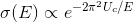
Nuevamente tomando el radio r como h/p, miramos el cociente Uc/E
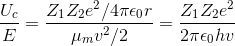 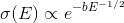 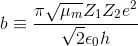
Ahora podemos combinar todos los resultados anteriores, definiendo una función S(E) como una función de la energía que varía poco, y podemos expresar la sección transversal como:
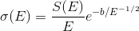
Y al reemplazar todo esto en la ecuación de la integral obtenemos finalmente:
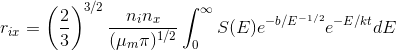
En esta ecuación, la primer exponencial del integrando refiere a la probabilidad de penetración, y la segunda exponencial a la distribución de Maxwell-Boltzmann. El producto de las mismas presenta un acusado máximo, al cual llamamos Pico de Gamow, el cual es el punto óptimo de energía en el cual se realizan las reacciones. En el siguiente gráfico podemos ver el Pico de Gamow para la temperatura central del Sol.

Leyes de conservación
En la introducción se vio que las estrellas fusionan hidrógeno para producir helio. Sin embargo, estas reacciones no se pueden dar de forma completamente arbitraria, existen ciertas leyes de conservación que deben ser respetadas en las mismas. Antes de mencionarlas, veamos un poco acerca de leptones y bariones.
Los leptones son partículas elementales que interactúan mediante la fuerza nuclear débil y la electromagnética, en caso de estar cargados, pero no mediante la fuerza nuclear fuerte. Su nombre viene del griego "leptos" que significa "delgado", dado que son por lo general partículas de baja masa (exceptuando al leptón tau, que tiene casi el doble de masa que un protón). Existen seis tipos de leptones: electrón, muón, tau, y sus neutrinos asociados.
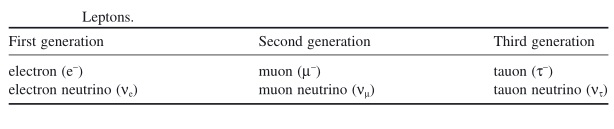
Los bariones son partículas elementales formadas por tres quarks, los más representativos y los cuales son objeto de interés en este trabajo son los protones y neutrones. Los bariones pueden interactuar no solo por la fuerza débil sino por la fuerza nuclear fuerte, que mantiene los núcleos atómicos unidos. Nuevamente, el nombre viene del griego "barys" que significa "pesado". Existen seis tipos de quarks: arriba, abajo, encanto, extraño, cima, fondo. Los quarks tienen la particularidad de interactuar mediante todas las fuerzas fundamentales de la naturaleza, y tienen las siguientes cargas eléctricas.
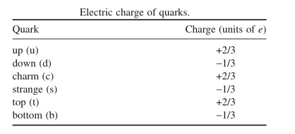
Un protón está compuesto de dos quarks arriba y un quark abajo (carga=1e) mientras que un neutrón está compuesto de dos quarks abajo y uno arriba (carga=0).
Ahora abordemos las leyes de conservación. Durante las reacciones nucleares, se deben conservar tres cantidades: carga, número leptónico y número bariónico. El número bariónico de protones y neutrones es +1 y el número leptónico de electrones y neutrinos es +1. Para sus correspondientes antipartículas, estos números son -1. Por ejemplo, veamos la siguiente reacción: 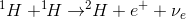
En esta reacción vemos que dos átomos de hidrógeno se fusionan para producir uno de deuterio, pero también vemos que se liberan un positrón y un neutrino. Por consiguiente, no solo vemos que la carga se conserva, sino que los números bariónicos a ambos lados de la reacción son +2; y los números leptónicos 0.
Algunas reacciones nucleares
Fusiones en la secuencia principal
Durante la mayor parte de su vida, las estrellas fusionan hidrógeno para producir helio, mientras permanecen en la secuencia principal. Veremos dos de este tipo de fusiones: las cadenas protón-protón y los ciclos CNO.
Cadenas protón-protón:
Las cadenas protón-protón son una serie de fusiones que transforman hidrógeno en helio. Son llamadas así porque la primer reacción en ellas es la fusión de dos protones (núcleos de 1H) y son las principales reacciones en estrellas de masas por debajo de 1.5 masas solares. La primera de ellas, denotada PPI, es así:
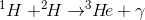
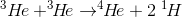
Cada paso de esta reacción tiene su propia tasa, ya que se deben superar distintas barreras de Coulomb. El más lento es el primero, ya que involucra un decaimiento de un protón en un neutrón via la reacción 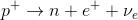
Esta cadena se da en el 69% de los casos en el Sol. En el restante 31%, el 3He no se fusiona con otro 3He sino con 4He, dando origen a dos cadenas más, PPII y PPIII, las cuales son:
PPII
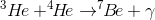
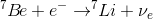
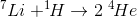
PPIII
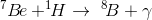
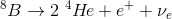
Una vez que el 3He se fusionó con el 4He, hay un 99.7% de posibilidades de que se de la cadena PPII. Cuando se da la cadena PPIII es porque el 7Be en vez de interactuar con un electrón libre, lo hace con un protón, y las posibilidades de que esto ocurra son del 0.3%.
En el siguiente gráfico se muestran resumidas estas tres cadenas:
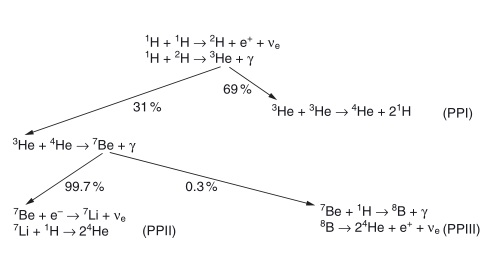
La energía emitida (sin contar la energía de aniquilación de positrones y la energía que escapa con los neutrinos) es:

Eventualmente, los dos positrones liberados se aniquilarán con dos electrones en el plasma estelar, por lo que un término de energía debe ser sumado: 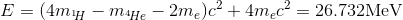
Por su parte, los neutrinos liberados también tienen energía, la cual restaremos ya que fácilmente escaparán de la estrella sin interactuar con materia. Se ha calculado que la energía perdida en la cadena PPI es aproximadamente 0.263MeV, en la cadena PPII 0.8MeV y en la PPIII 7.2MeV. Esto quiere decir que, aproximadamente, las cadenas protón-protón pierden un 2%, 4% y 27.9% de su energía al escapar esta con los neutrinos.
Ciclos CNO
En los ciclos CNO los protones se fusionan con núcleos de C, N y O para producir helio. Como estos núcleos están más cargados que un protón, se necesita más energía para superar la barrera de Coulomb, es por esto que estos ciclos se dan más frecuentemente en estrellas más masivas y son su principal fuente de energía. A continuación se presentan tres ciclos CNO. Las flechas más gruesas indican las reacciones comunes a dos ciclos.
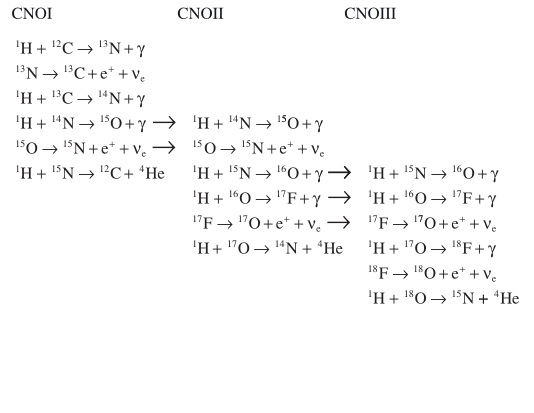
Como en estos ciclos los isótopos de C, N y O son producidos y destruidos en el mismo número, se los puede resumir a la siguiente expresión global.
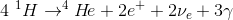
La energía en estas reacciones es la misma que en las cadenas protón-protón, salvo por la energía cargada por los neutrinos. En estas reacciones, al no crearse ni destruirse globalmente C, N y O, se dice que estos elementos actúan como catalizadores. Al ser necesarios estos elementos, los cuales no fueron formados durante la nucleosíntesis del Big Bang, la primera generación de estrellas no los contenía, y su energía sólo se obtenía de las cadenas protón-protón. En el siguiente gráfico se puede apreciar mejor el "caracter cíclico" de los ciclos CNO.
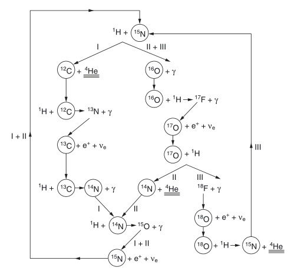
Finalmente, en el siguiente gráfico también podemos ver las producciones de energía por unidad de masa de las dos reacciones (CNO y PP) en función de la temperatura, vemos como CNO se hace dominante a medida que aumenta la temperatura, lo cual se condice con lo que habíamos visto de que es el ciclo dominante en estrellas de mayor masa.
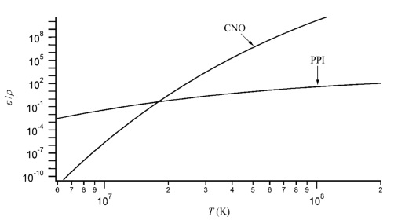
Fase de quema de Helio
Durante la quema de hidrógeno, la estructura del núcleo estelar cambia, incrementándose el helio en él mientras el hidrógeno disminuye. Esto trae aparejada una contracción del mismo mientras el radio estelar crece, convirtiéndose la misma en una gigante roja. Al contraerse el núcleo, su temperatura aumenta. Al llegar a una temperatura crítica, del orden de 108 K, puede comenzar la fase de quema de helio, la cual será la principal fuente de energía una vez que el hidrógeno se haya acabado. Las capas exteriores al núcleo, que durante la estadía en la secuencia principal tenían temperaturas muy bajas como para permitir quema de hidrógeno, ahora al haberse contraído el núcleo han alcanzado esas temperaturas críticas y se pueden empezar a dar esas reacciones.
La quema de helio puede darse de la siguiente manera:
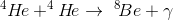
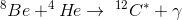
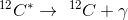
En la segunda reacción, vemos el símbolo * en el carbono. Esto quiere decir que el mismo está en un estado nuclear excitado. Esta reacción es llamada triple alfa, ya que tres partículas alfa (helio) se fusionan para producir carbono. Cada reacción provee de 7.275 MeV de energía a la estrella.
Sin embargo, esta no es la única reacción posible. Al igual de lo que sucede durante la secuencia principal, a medida que se quema el helio en el núcleo, este se contrae. A medida que aumenta el carbono, se puede dar la siguiente reacción.
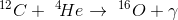
Además, el helio se puede fusionar para crear Ne, Mg y otros elementos, pero estas reacciones ya tienen tasas muy bajas.
Fases más avanzadas
Carbono
La siguiente fase de fusión es la fusión de carbono. Si bien se mencionó que el carbono puede fusionarse con helio para producir oxígeno, a medida que este aumenta en el núcleo, la fusión de carbono dominante es la siguiente:
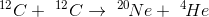
Sin embargo, las siguientes reacciones también pueden ocurrir, siendo las dos últimas endotérmicas:
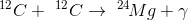
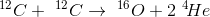
Neón
El siguiente paso en la fusión nuclear es la quema de neón, ya que aunque el mismo tiene más nucleones que el oxígeno, su temperatura crítica de fusión con partículas alfa es menor. A las elevadas temperaturas a las que se encuentran los núcleos en esta etapa evolutiva, se pueden encontrar muchos fotones energéticos que conduzcan a la fotodesintegración de una parte del núcleo.
Si bien esta reacción es endotérmica y quita 4.73 MeV de energía a la estrella, crea partículas alfa que pueden interactuar con el restante neón mediante la siguiente reacción que emite 9.316 MeV:
A medida que el núcleo continúa contrayéndose y aumentando la temperatura, el neón se quemará también por medio de la siguiente reacción:
Durante la etapa de quema de neón, también ocurre de manera secundaria una quema de magnesio que empieza a producir silicio:
Oxígeno
El oxígeno se acumula en el núcleo durante las fases de carbón y neón. Cuando este empieza a fusionarse, se pueden dar las siguientes reacciones:
Esta última reacción, al igual que la última del carbono, deja un neutrón libre. Estos neutrones libres son importantes porque participan en la formación de elementos más pesados.
Silicio
El silicio puede reaccionar con las partículas alfa creadas en la fotodesintegración mediante la siguiente reacción:
Esta reacción es proseguida por una cadena de reacciones con partículas alfa:
56Ni es un núcleo inestable, y decaerá en 56Co, el cual a su vez decaerá en 56Fe mediante las siguientes reacciones:
El silicio también puede formar hierro de una forma más "directa", al producir níquel mediante la siguiente reacción (luego el níquel se desintegrará de la misma manera que vimos), sin embargo, esta reacción es mucho menos probable que ocurra debido a la barrera coulombiana:
Una vez llegados a este punto, la generación de energía por fusión nuclear se detiene, al ser 56Fe uno de los núcleos más estables de la naturaleza. La acumulación de hierro en el núcleo de las estrellas conduce a una crisis energética que desemboca en la destrucción de la estrella mediante un evento de supernova.
Bibliografía
-An Introduction to Stellar Astrophysics. Francis LeBlanc.
-An introduction to Modern Astrophysics. Bradley Carroll
-Apuntes de astrofísica. Jesús Cabrera Caño